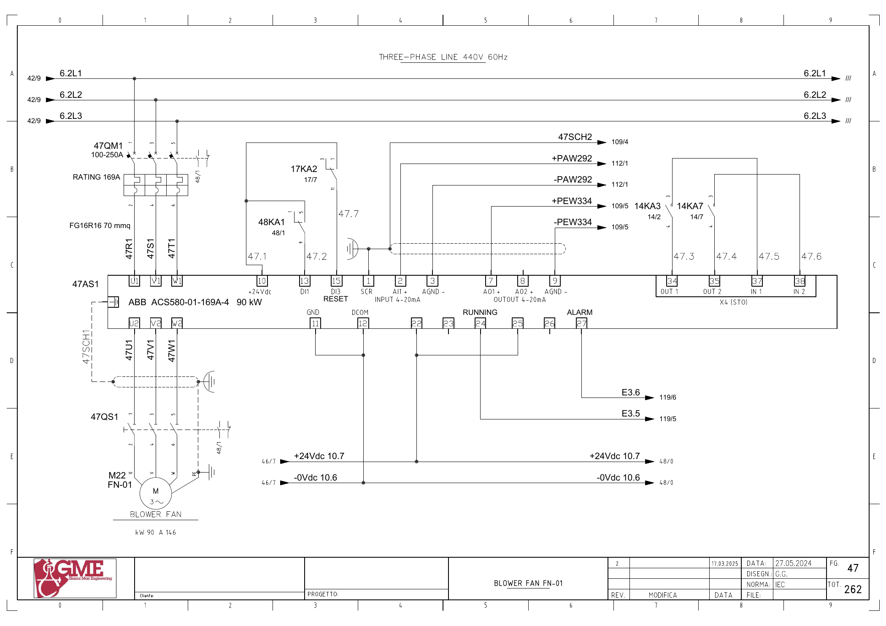
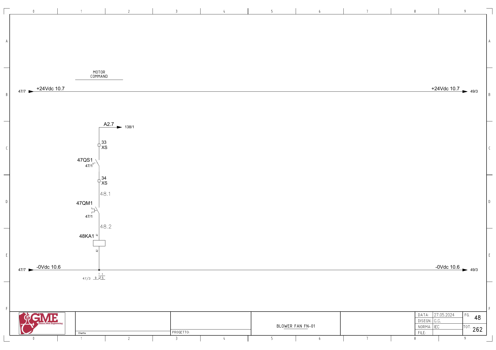

FN01 · 순환 블로어 전기 회로 추적
1. 도면의 구성과 진단 경계
FG47: M22 FN-01(도면90kW·146A), 47AS1 ABB ACS580-01-169A-4(90kW), 47QM1·47QS1. 냉각팬은 별도 FG54 예비 회로입니다.
주팬 기동·운전 응답·전류와 온도·진동·관련 설비에 의한90분 정지를 분리합니다. 도면 외 계측 단자·스케일은 추가 확인 범위입니다.
추가 시공도면 · 접속함·케이블·배관 경로 — 승인·현재 설치는 확인 전입니다.
2. 기동 명령
A2.7 ↔ 백업 %Q2.7 / start fn01 · FG48 · PDF 49
- A2.7 (FG138/1)
- XS:33 → 47QS1 보조접점 → XS:34
- 47QM1 보조접점
- 48KA1 코일 A1→A2 / 0Vdc10.6
전달·사용 위치: FG47: 47AS1 단자10(+24V) → 48KA1 접점1→9 → 단자13(DI1). 원본1951의 요청·1798의2초 감시와 연결합니다.
원본 심볼 직접 참조: 1798 / allarms 1 / ORef 694 · 1951 / motors 1 / ORef 699
3. 운전 응답
E3.5 ↔ 백업 %I3.5 / fn01_fbk · FG47 · PDF 48
- +24Vdc10.7 → 47AS1 단자22
- 단자24 → E3.5
- PLC 입력 참조 FG119/5
전달·사용 위치: 원본1798·1950·1951의 내부 FN01 응답을 추적합니다. 물리→DB 전달은 미확정입니다.
원본 심볼 직접 참조: 1028 / time work motor / ORef 1666
4. 인버터 이상
E3.6 ↔ 백업 %I3.6 / fn01_all_inv · FG47 · PDF 48
- +24Vdc10.7 → 47AS1 단자25
- 단자27 → E3.6
- PLC 입력 참조 FG119/6
전달·사용 위치: FN01_INV 래치와 요청 해제를 확인합니다.
원본 심볼 직접 참조: 복원 LAD에서 이 이름의 직접 참조는 찾지 못했습니다. 내부 Inputs 등의 별도 전달·미해석 참조·현재 프로그램은 확인 전입니다.
5. 속도 설정
±PAW292 ↔ 백업 %QW292 / fn01_sp_speed · FG47 · PDF 48
- +PAW292 → 47AS1 단자2(AI1+)
- -PAW292 → 단자3(AGND)
- 아날로그 출력 참조 FG112/1
전달·사용 위치: Data.SET_PERC_VT01과 속도 변환·요청 해제의 전체 호출 순서를 확인합니다.
원본 심볼 직접 참조: 1685 / analog output conversion / ORef 488
6. 전류 전달
±PEW334 ↔ 백업 %IW334 / fn01_current · FG47 · PDF 48
- 47AS1 단자8(AO2) → +PEW334
- 단자9(AGND) → -PEW334
- 아날로그 입력 참조 FG109/5
전달·사용 위치: 원본1071 Part145: FN01_Current → Inputs.FN01_ABSORPTION.
원본 심볼 직접 참조: 1071 / hmi inputs / ORef 150 · 1772 / analog input conversion / ORef 1524
위 직접 참조는 복원 원본의 같은 심볼명 위치입니다. 읽기·쓰기 역할, 현재 호출, 현장 사용을 함께 확정한 표는 아닙니다. 원본의 simulation 블록 참조가 있더라도 이번 작업에서 가상 실행·개발·시험은 진행하지 않았습니다.
원본 PLC와 연결
남은 확인과 기록
- TC04/TC05 실제 채널·정상범위·설치와 진동ZT01 계측 경로 확인
- FG54의 냉각팬 SPARE·실제 사용 상태 확인
- 현재 인버터 설정·풍량/압력 운전 기준과90분 지연 정책 확인
제조사 단자 정의 대조
ABB ACS580-01 하드웨어 매뉴얼 Rev.D의 인쇄141·142페이지(PDF145·146)는22=RO2C,25=RO3C로 정의합니다. 이 자료는 단자 정의 대조에 사용하며 기본 매크로의 신호 기능·전압 모드를 현재 현장 설정으로 간주하지 않습니다.
도면을 함께 확인
FG 47 · 해당 도면 보기

FG 48 · 해당 도면 보기

| 기록 항목 | 내용 |
|---|---|
| 현장 식별 | 설비 ID / 반·단자대 / 모터·인버터 명판 / 도면 개정 |
| 신호 구간 | PLC 명령 / 단자 / 직렬 접점 / 릴레이 / DI / 응답 접점 / 입력 / 내부 DB |
| 관찰 결과 | 시각 / 운전 모드 / 기준값의 근거 / 관찰값 / 최초 불일치 구간 |
| 복구 확인 | 원인·조치 / 원인 해제 / Reset / 재요청 / 주변 설비 영향 |